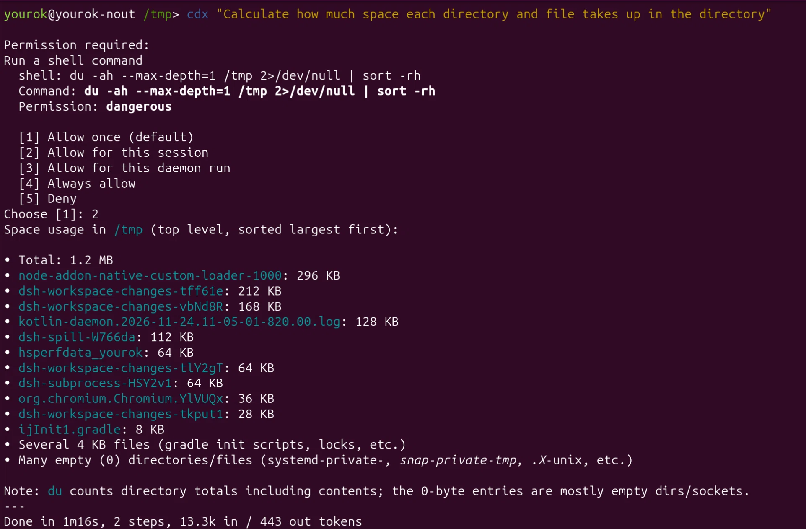

A coding agent that lives in your terminal
Describe the task in plain language. cdx reads your project, edits the files and runs commands on the machine you run it on - and asks for permission before every change.
$ sudo apt install ./cdx_<version>_amd64.deb $ cdx "why does the nightly backup take 3 hours?" Permission required: Run a shell command outside the working folder The action leaves the working folder. Command: du -sh /srv/backup/* Permission: dangerous Working folder: /etc/backup Outside: /srv/backup [1] Allow once (default) [2] Deny The backup copies 240 GB one file at a time and never skips unchanged files: that is the 3 hours. Compression is 4 minutes of it.
What it is used for
It is not a chat window next to your terminal: it works in the current directory on the real machine - reads files, runs commands and shows what it changed. Most of the work below is routine sysadmin work.
Understand code you inherited
"Explain what this service does and which ports it opens." cdx walks the project and answers with file and line references instead of guessing.
Fix classic scripts
"This build script runs one job at a time - make it run five." You get a diff, not a rewritten file: same flags, same output names, only the loops move.
Work with units and logs
"Why did this container restart at 3 am?" It reads journald output, unit files and configs, then names the cause and the fix.
Automate the routine
"Write a systemd unit for this binary, set the limits, enable it." The commands run only after you approve them.
A real session, start to finish
A real session, recorded at normal speed and played 2.5x faster: a 16-target build script is rewritten to run five builds at a time.
Session time: 2 min 11 s, 15 steps. The model was the configured default; the permission prompts were pre-approved for the recording.
A real example: build-all.sh
build-all.sh from a Go project builds sixteen platforms one after
another, then the GStreamer variants, then the Android targets. On a laptop that is
a coffee break; on a build host it is wasted cores.
for PLATFORM in "${PLATFORMS[@]}"; do
GOOS=${PLATFORM%/*}
GOARCH=${PLATFORM#*/}
CMD="GOOS=${GOOS} GOARCH=${GOARCH} CGO_ENABLED=0 ${GOBIN} build ${BUILD_FLAGS} -o ${BIN_FILENAME} ./cmd"
echo "${CMD}"
eval "$CMD" || FAILURES="${FAILURES} ${GOOS}/${GOARCH}${GOARM}"
done
The prompt:
$ cdx "The builds in build-all.sh run one after another. Make it run up to 5 builds in parallel and keep the same flags and output names."
MAX_JOBS=${MAX_JOBS:-5}
spawn_build() {
local cmd="$1" label="$2" running id
while :; do
running=$(jobs -rp | wc -l)
(( running < MAX_JOBS )) && break
wait -n
done
...
( if ! eval "${cmd}"; then : > "${JOBS_TMP}/${id}.failed"; fi ) &
}
for PLATFORM in "${PLATFORMS[@]}"; do
...
spawn_build "${CMD}" "${GOOS}/${GOARCH}${GOARM}"
done
wait_builds
What stayed the same matters more than what changed: the build flags, the
-o paths, the .exe suffix, the GOARM/GOMIPS handling, and
the final failed on: ... block with exit code 1. The web build,
go mod tidy, AppImages and the docker step are left sequential on
purpose - they share one directory and would overwrite each other.
The original script was not touched: cdx worked on a copy in a scratch directory.
How it is built
One binary: the CLI you talk to and the daemon it starts in the background. Every feature is a plugin, so the core stays small: transport, storage, the plugin runtime, the session loop.
| CLI | cdx "prompt", sessions per directory, queueing when two prompts land in the same folder |
|---|---|
| Daemon | keeps sessions, providers and permissions; serves the dashboard on 127.0.0.1:8787 |
| Dashboard | providers, models, permissions, sessions, plugins and logs; every plugin adds its own page |
| Providers | any OpenAI-compatible endpoint (OpenAI, DeepSeek, OpenRouter, Ollama, LM Studio) and Anthropic |
| Tools | read, search, edit, shell, subagents, MCP servers as extra tools |
| Data | ~/.local/share/cdx, ~/.config/cdx, ~/.local/state/cdx |
# the daemon starts on demand $ cdx --config http://127.0.0.1:8787 $ cdx models * openai/gpt-5 (plugin: providers) ollama/qwen3:8b (plugin: providers) $ cdx plugins list auth v1.0.0 [enabled ] (system) API token and local-host check providers v1.0.0 [enabled ] (system) LLM connections, encrypted keys, models, streaming completions $ cdx session list * why the backup takes 3 hours [persistent] msgs=12 dir=/etc/backup id=01K9ZQ3M7X8YV2R5T0N4B6C8DA
It asks before it acts
Every edit, every shell command and every path outside the working folder go through a permission check. Nothing happens until you answer.

The prompt shows the tool, the exact command and the permission class before you answer. Enter takes the default, "allow once"; the other answers allow it for this session, for this daemon run, or always.
Per class of action
Reading, edits and shell commands each have allow,
ask or deny. By default only reading is allowed;
anything that changes data on the machine asks first.
No sandbox, by design
cdx works on the real machine as your user, not in isolation. The model can be wrong - and a wrong command really breaks things. Run cdx in Docker or a VM so it cannot break your machine.
You approve every command
cdx keeps no list of "bad" commands - any of them can be dangerous. By default it shows the exact command, the working folder and every outside path before running it. You approve what will actually run.
Local by default
cdx has a web dashboard, and by default it is reachable only from this machine
(127.0.0.1). The API requires a token, created on first start. For
shared access there is CDX_ALLOW_REMOTE_HOST, which turns those
checks off.
Install
Packages for i386, x86_64, armv7 and aarch64 are built for every release. Pick the one your distribution understands.
Debian / Ubuntu (.deb)
Download cdx_<version>_amd64.deb from the
releases page.
sudo apt install ./cdx_<version>_amd64.deb
Fedora / RHEL / openSUSE (.rpm)
sudo dnf install ./cdx-<version>-1.x86_64.rpm
Alpine (.apk)
The package is unsigned, hence the flag.
sudo apk add --allow-untrusted ./cdx_<version>_x86_64.apk
Any Linux (zip + install.sh)
unzip cdx_<version>_linux_x86_64.zip -d cdx
sudo ./cdx/install.sh # /usr/bin/cdx and /usr/share/cdx/plugins
From source
Go 1.27+ and Node.js 22+ are needed to build the binary and the panels.
make # web interface, plugin panels, binary sudo make install # /usr/bin/cdx and /usr/share/cdx/plugins
First run
Starts the daemon and opens the web interface, where you add a provider and a model.
cdx --config
Just ask
Runs in the current directory and keeps the session for the next question. The daemon starts on demand.
cdx "explain this package"
Daemon
Keeps sessions, providers and permissions in the background while you work.
cdx daemon status
Documentation
README
Install, use, web interface, remote access, permission prompts.
Architecture
Core modules, contracts between the core and the plugins.
Plugin guide
Manifest format, the cdx host API, panels, permissions.
MCP server
Expose cdx as tools to another agent, with approvals and per-client permissions.